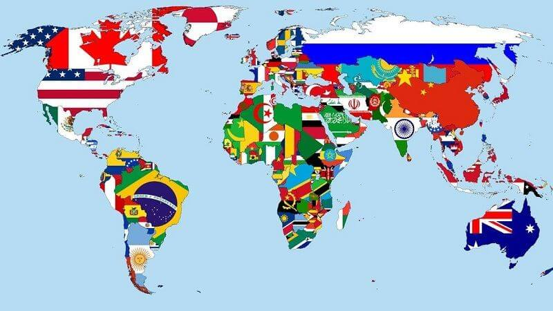
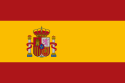
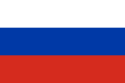

LA VIDA EN IDIOMAS
Idiomas mas hablados

Los idiomas con más hablantes nativos del mundo son europeos y asiáticos.
Los europeos por su gran distribución, y los asiáticos por la gran población de esos países.
Los idiomas por número de hablantes totales se puede encontrar aquí.
Idiomas por número de hablantes nativos.
| Bandera | Idioma | Número de hablantes nativos (Millones) |
| | 1. Mandarín | 918 |
|  | 2. Español | 480 |
| | 3. Inglés | 379 |
| | 4. Hindi | 341 |
| | 5. Bengalí | 300 |
| | 6. Portugués | 221 |
|  | 7. Ruso | 154 |
| | 8. Japonés | 128 |
| | 9. Panyabí | 92 |
| | 10. Maratí | 83 |
Fuente en wikipedia